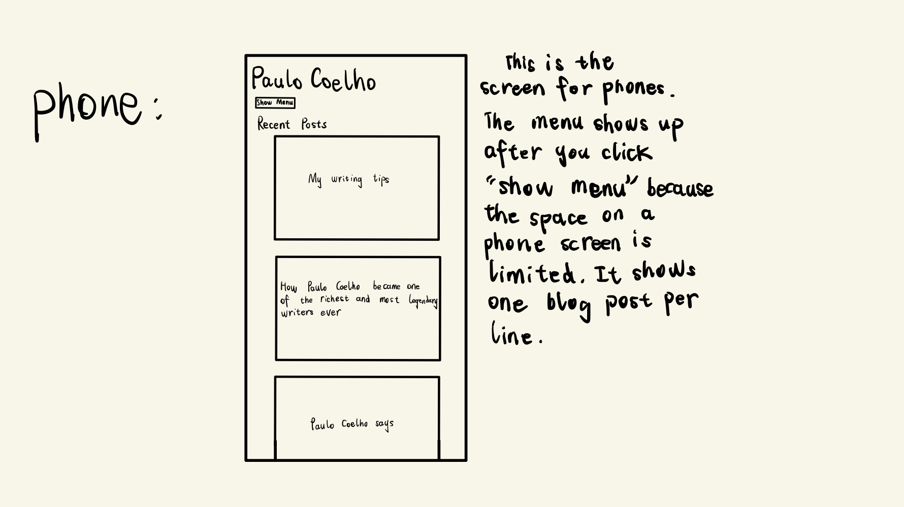
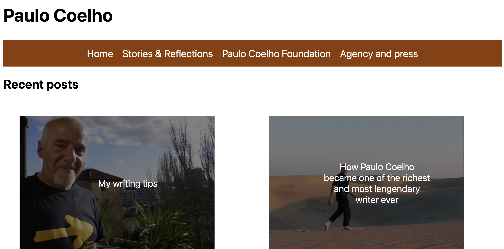

CS1300 HW2
Part 1: Screenshot and link to the original website
This is the link to the original website:
https://paulocoelhoblog.com/
This is the screenshot:
Part 2: A short summary about usability problems you found
- There are too many things displayed in the site, including the blogs, email address, and social media accounts. Viewers will be easily distracted.
- The images attached to each of the blog post are too small. It is hard to get viewers' attention.
- The name "Paulo Coelho" at the top of the site is too big, which distracts viewers from the main contents.
- The site is split into two parts: the left part for blogs and the right part for subscriptions. Users shouldn't have to look left and right for information.
Part 3: A short summary about the accessibility tests and findings
- There are a lot of issues after performing the accessibility test with WAVE. The images on the site are lack of alternative texts, and one image has a very low contrast. There are also images with redundant alternative texts and some skipped heading levels.
Part 4: Visual style guide shows a palette of components with visual choices
This is the visual style guide. It shows the navigation bar, the button, and the blog posts with texts on it. It also shows that the address on navigation bar changes to blue when it's hovered and the image on blog posts increases its brightness when it's hovered.
Part 4: Anotated wireframes and hi-fi prototypes
The pictures below are the annotated wireframes:

The pictures below are the hi-fi prototypes for phone, tablet, and destop screens:
Part 5: Responsive Page
This is the link to the responsive page:
https://fantasticlion.github.io/beautifullion/
The pictures below are layouts for phone, tablet, and destop screens:

The pictures below are layouts for font size of 125% and 50%:
